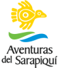
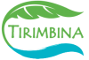
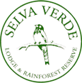
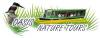

En el corazón de Costa Rica y rodeado por la maravillosa selva tropical del norte de Costa Rica
La OET (Organización de Estudios Tropicales) es un conglomerado sin fines de lucro de más de 50 universidades, escuelas secundarias e institutos de investigación de todo el mundo.
Ubicada entre bosques y ríos del norte de Costa Rica, Tirimbina es un destino educativo, de investigación y ecoturístico.
Hacienda Pozo Azul es propiedad y está operada por los Quintana, una familia costarricense de empresarios y amantes de la naturaleza.
Aguas Bravas te ofrece toda la adrenalina de un increíble tour de rafting en rápidos de río ubicado en medio de la selva tropical
Selva Verde es una verdadera escapada para amantes de la naturaleza, excursionistas, observadores de aves, científicos, estudiantes y para los que buscan aventura.
Nuestro personal está comprometido con brindar a nuestros clientes la mejor experiencia desde el primer contacto..
